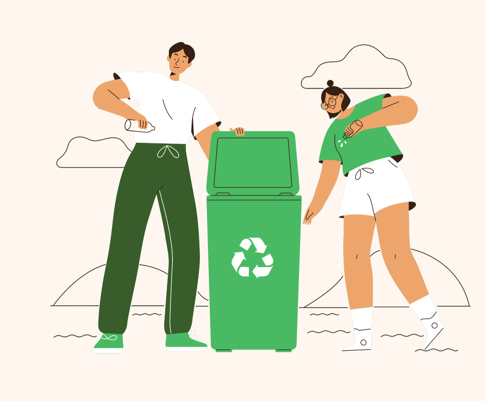

DICAS
VEM APRENDER
COM A GENTE
Mais do que nunca é hora de pensar em formas sustentáveis e conscientes para um futuro melhor. Afinal, o planeta, assim nós, fica bem mais bonito em equilíbrio. Mas sabemos bem que cuidar dele e do nosso ambiente, da nossa casa, bairro, cidade e país vai muito além de um dia. É uma tarefa diária. Vamos te dar algumas dicas de reciclagem práticas e nada complexas. Com medidas simples, é possível ter uma vida com impactos menos agressivos à natureza.
Ainda existem muitos desafios a serem vencidos quando falamos de reciclagem no Brasil. Isso porque nosso país recicla menos de 4% de todo o lixo que é produzido em seu território. Essa baixa porcentagem tem alguns fatores importantes para ser justificada. Primeiramente, nós ainda não desenvolvemos tanto o hábito de separar o lixo, por exemplo.
VEJA A BAIXO 4 DICAS
01 - SEPARE OS RESÍDUOS
Separar o que não é possível de ser reciclado do que é, garante com que o processo funcione de forma mais facilitada para todos. Por isso, não se esqueça de sempre lavar os recipientes de plástico, metal e vidro ao descartá-los. Uma dica: em tempos de home office, tenha sempre uma lixeirinha perto de onde você trabalha para jogar fora os papéis que não são mais necessários.
Descubra se a coleta seletiva passa recolhendo o lixo reciclável na sua rua. Se passar, você pode fazer a diferença e conscientizar os moradores do seu prédio sobre o descarte correto das embalagens. Por exemplo: coloque folhetos mostrando quais objetos podem ir naquele lixo do corredor.
02 - ORGÂNICO E INORGÂNICO
Os resíduos podem ser divididos em dois tipos: lixo orgânico e lixo inorgânico1. A diferença entre esses dois tipos de lixo está em sua origem. O lixo orgânico é proveniente de materiais animais ou vegetais, enquanto o lixo inorgânico existe por meio das transformações feitas pelos ser humano, principalmente no que se refere a produção desses componentes, como alumínio, vidro e metais. Os contentores para lixo são divididos por cores, os quais indicam o tipo de lixo a ser depositado
03 - APROVEITE O QUE PUDER
Plásticos mais resistentes e embalagens de vidro podem ter sua vida útil prolongada dentro da sua própria casa. Sabe aquele copo de vidro do purê de tomate que tempera sua massa? Ele pode se transformar em um porta-canetas, porta-vela e o que mais você quiser guardar ou expor nele.
As famosas garrafas plásticas podem se tornar vasinhos para suas plantas. Pois bem, elas são muito úteis na hora de plantar mudinhas ou para dar um start na sua hortinha. Aplicando um novo uso a esses objetos, você evita com que ele sejam descartados diretamente em rios, lagoas, locais inadequados e demorem muitos anos para se decompor.
04 - ENCONTRE UM PONTO DE COLETA
Depois de você separa os resíduos é hora de destinar para onde ele irar, é por isso que nós criamos a EcoSenac, para conectarmos toda uma comunidade que se preocupa para onde o lixo vai impactar.
Aqui na EcoSenac você se conectar com o ponto de coleta mais próximo de você e ir até ele para fazer parte dessa comunidade. É simples, em nossa pagina de pesquisar ponto, você pesquisa e encontra o pontos de coletas que estão cadastrados em nosso sistema mais próximo de você!
